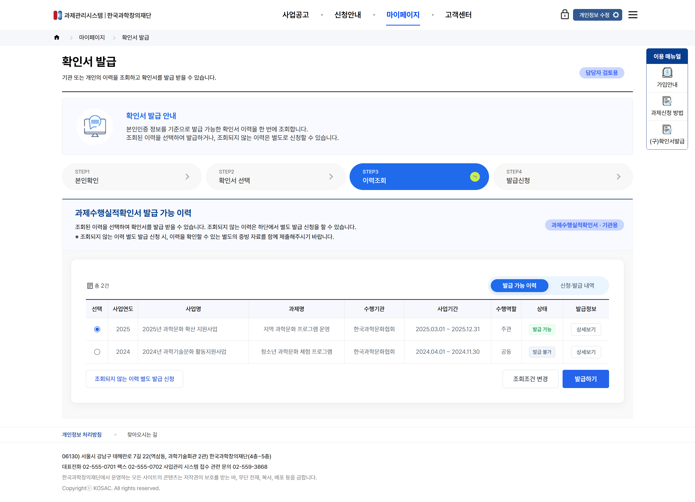
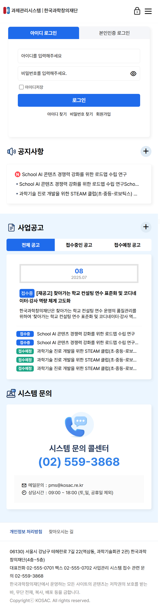
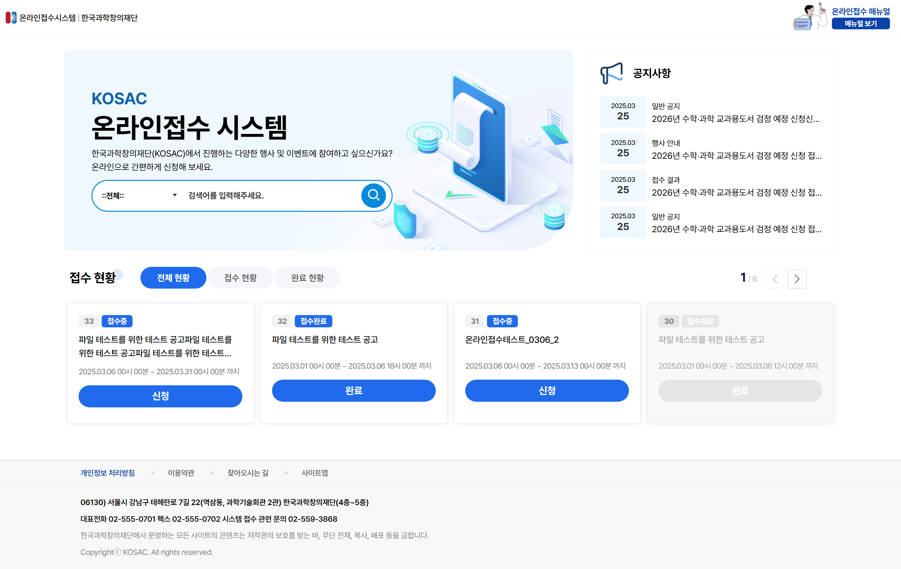
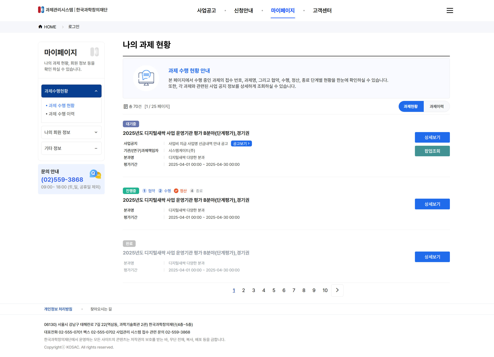
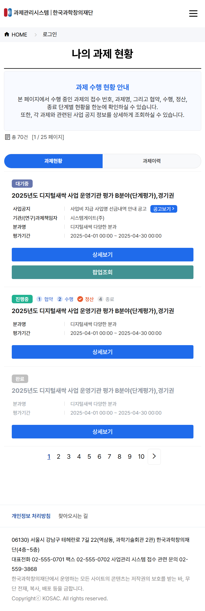
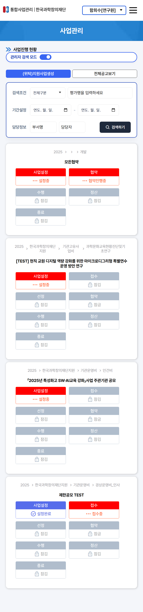
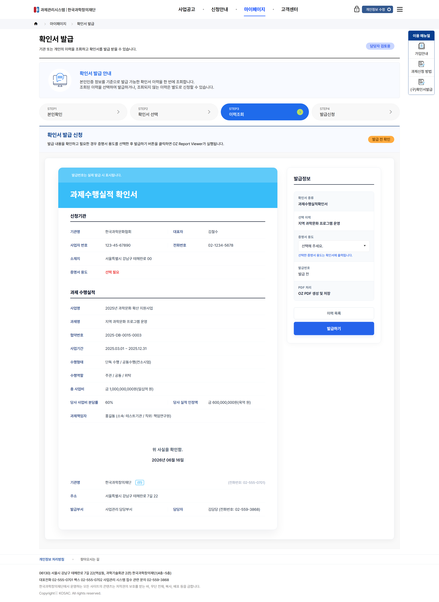

CONCEPT A
단계별 발급 프로세스 및 이력 조회 중심 UI 시안
본인확인부터 발급신청까지 4단계 스텝 배너로 진행 단계를 명확히 전달하며, 조회된 과제수행실적 목록을 직관적인 데이터 테이블과 상태 태그(발급 가능/불가)로 구성하여 사용자의 조회 및 선택 편의성을 극대화한 시안입니다.
UI/UX 디자이너 이지수


좌측 상단 공지사항과 주요 사업공고 영역에 '접수중/접수예정' 상태 뱃지를 적용하여 핵심 과제 정보를 직관적으로 파악할 수 있도록 구성했습니다. 우측 로그인 영역 옆에는 퀵 매뉴얼 바(가입, 신청, 공모 안내)를 배치하고, 하단에는 시스템 문의 콜센터 안내를 연결하여 대시보드 중심의 사용성을 극대화했습니다.
상단 히어로 영역에 직관적인 검색바와 비주얼 그래픽을 배치하여 원하는 접수 공고를 즉시 탐색할 수 있도록 설계했습니다. 하단 접수 현황 영역에는 '전체/접수/완료' 탭 필터링과 4열 카드 그리드를 적용하여 공고 기간, 접수 상태, 원클릭 신청 버튼을 한눈에 파악하도록 UI를 고도화했습니다.

수행 중인 과제의 상태를 대기중, 진행중, 완료 뱃지로 명확히 구분하고, 상세 스텝(협약-수행-정산-종료)의 진행 위치를 아이콘 프로그레스 바로 제공합니다. 상세 페이지 이동 없이도 사업공고, 평가기간 등 주요 메타정보와 상세보기/팝업조회 버튼을 빠르게 이용할 수 있습니다.

스마트폰, 태블릿 등 기기별 해상도 차이와 다양한 모바일 브라우저 환경에 완벽히 대응하도록 모바일 레이아웃을 정교하게 설계했습니다. 마이페이지의 과제 현황 카드와 내부 프로세스 단계 표기가 세로 1열 구조로 자연스럽게 재배치되어, 어떠한 기기 접속 환경에서도 최상의 가독성과 편안한 탐색 경험을 제공합니다.


업무 효율성과 데이터 시각화를 극대화하기 위해 설계된 내부 시스템 주요 화면 시안입니다.
보안 정책 준수 및 개인정보 보호를 위해 화면 내 주요 데이터는 더미 데이터(Dummy Data)로 구성되어 있습니다.

본인확인부터 발급신청까지 4단계 스텝 배너로 진행 단계를 명확히 전달하며, 조회된 과제수행실적 목록을 직관적인 데이터 테이블과 상태 태그(발급 가능/불가)로 구성하여 사용자의 조회 및 선택 편의성을 극대화한 시안입니다.

발급될 증명서(과제수행실적 확인서) 레이아웃을 좌측에 실시간으로 미리 보여주고, 우측에는 용도 선택 및 OZ Report/PDF 출력 설정 패널을 분할 배치하여 출력 전 오귀재를 방지하고 발급 편의성을 대폭 향상시킨 시안입니다.